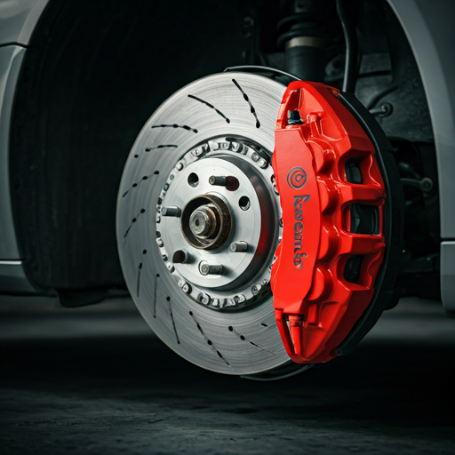

SAFETY & PERFORMANCE
Freios
O sistema de freios é o componente de segurança mais importante do seu veículo. Na J&L, realizamos inspeção e manutenção completa com peças originais ou de primeira linha.
Como realizamos o serviço:
- Inspeção visual das pastilhas, discos e tambores
- Medição da espessura e nível de desgaste das pastilhas
- Verificação do fluido de freio (nível e qualidade)
- Teste de pressão do sistema hidráulico
- Substituição de peças desgastadas com garantia
- Teste em rodagem após execução do serviço
O que está incluso:
- Pastilhas dianteiras e traseiras
- Discos e tambores
- Pinças e cilindros de roda
- Fluido de freio DOT 3 / DOT 4
- Cabo de freio de mão